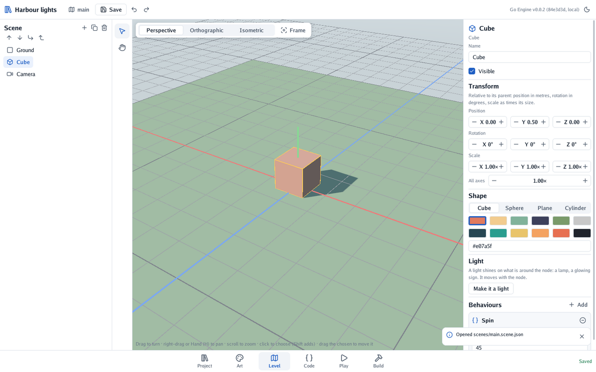

🚧 Go Engine is in development. What these pages describe can change from one version to the next: names, scene files and the editor’s layout included.
Go Engine makes games in Go. You arrange a game’s scenes in its editor, and you write what moves in them in Go. One game runs on a computer, on an Android phone and on a Nintendo 3DS.

A game is an ordinary Go module. Its scenes are files the editor writes, and its code is plain Go, written in any editor you like (Zed, Neovim, Visual Studio Code, GoLand…). The engine’s small standard library gives that code the scene’s nodes, the player’s buttons and the time.
| If you… | Read | Time |
|---|---|---|
| want to try it | Get started: install it and play a first scene | 15 min |
| want to understand how it thinks | Core ideas: games, scenes, nodes, behaviours | 15 min |
| want to learn step by step | 🗺️ The quest: a forest platformer in six levels | 2 h |
| want to do one thing | The guides: tiles, sprites, physics, lights, the 3DS | — |
| are looking up a name | The reference: every package, and the scene files | — |
| are stuck | Troubleshooting: errors by their code | — |
| want to change the engine | Contributing: the code’s layout, tests, style | — |
| Scenes | 2D, 3D and isometric; shapes, .glb models, sprites with animations, tile maps |
| Physics | 2D bodies: solid, moving, pushable, platforms, triggers and gravity zones |
| Lights | Point lights in 2D and 3D, sprite lights, an ambient light |
| Code | Behaviours: Go types with Start and Update, played inside the editor |
| Platforms | Computers (tried on Linux; macOS and Windows still to try), Android and the Nintendo 3DS, built from the editor |
Not yet: sound, a game’s own interface (menus, scores on screen), bodies that turn or slopes, and textures from models. The list lives in Core ideas.
Go Engine stands on the author’s other libraries: Go Renderer draws, Go UI is the editor’s window, and TinyGo for the 3DS builds for the console. Every design decision has a proposal in proposals.
I write most of my code by hand, so I want to be clear about this project: it was written by an
AI assistant (Claude, by Anthropic) under my direction. Every commit made this way carries a
Co-Authored-By: Claude line.
Status: pending thorough review. The code compiles and its tests pass, but I have not yet reviewed it line by line. Treat it as a working draft, not as code I vouch for.